7 Egne felt i skjemaet
Dette kapittelet beskriver hvordan du oppretter egne felt i et kartlag og legger dem inn i redigeringsskjemaet (Attributes Form) i QGIS. Eksempelet legger til et heltallsfelt NVE_ID og et tekstfelt firma med nedtrekksliste. Framgangsmåten er den samme for polygon-, punkt- og linjelagene som programtillegget oppretter.
7.1 Åpne egenskaper for laget
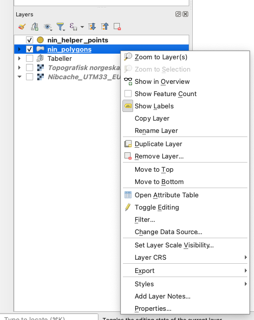
- Høyreklikk på laget (
nin_polygons_<målestokk>, f.eks.nin_polygons_M005) i laglisten. - Velg Properties… (Egenskaper) fra menyen.
- I dialogen som åpnes, velg fanen Fields i venstremenyen.
Dette viser alle eksisterende attributtfelt i laget.
7.2 Aktiver redigering av felt
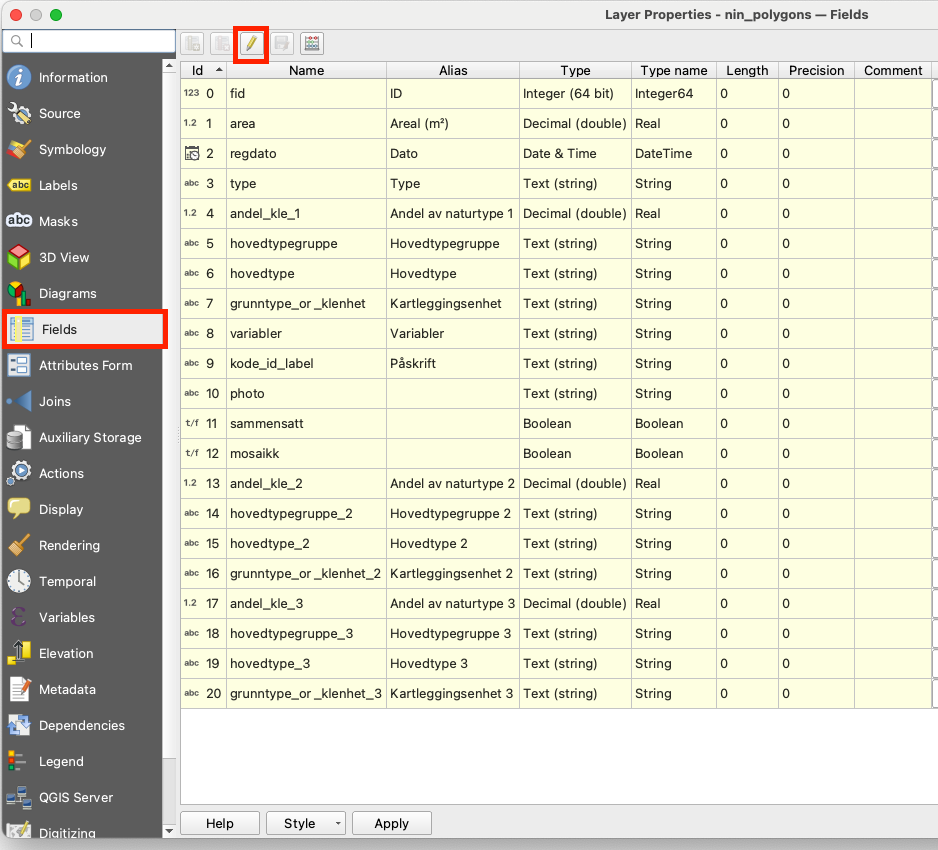
- Klikk på blyant-ikonet øverst i feltlisten for å aktivere redigering av strukturen.
- Når redigering er aktivert, kan du legge til, slette eller endre felt.
7.3 Legg til nytt felt
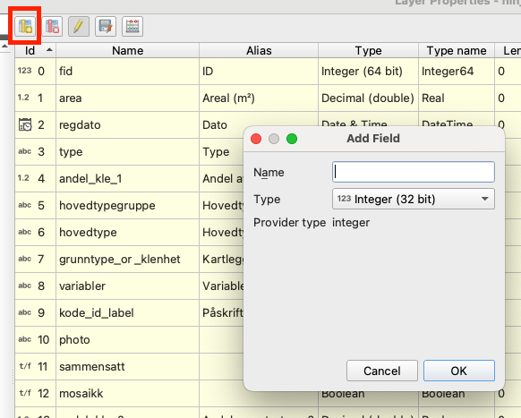
- Klikk på ikonet Legg til felt (gult ark med grønt plusstegn).
- Dialogen Add Field åpnes.
7.4 Opprett feltet NVE_ID
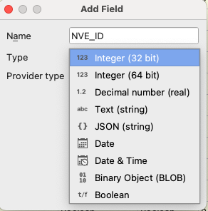
- Skriv
NVE_IDi feltet Name. - Velg datatype Integer (32 bit).
- Kontroller at Provider type settes automatisk til integer.
- Klikk OK for å opprette feltet.
Dette feltet brukes til å lagre numerisk ID fra NVE.
7.5 Opprett feltet firma
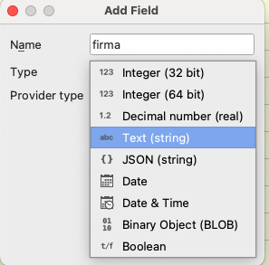
- Klikk igjen på Legg til felt.
- Skriv
firmai Name. - Velg datatype Text (string).
7.6 Angi lengde for tekstfelt
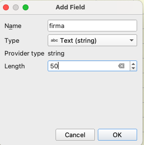
- Når datatype er satt til tekst, angi Length = 50.
- Klikk OK for å opprette feltet.
Dette bestemmer maksimal lengde på teksten som kan lagres i feltet.
7.7 Kontroller at feltene er lagt til
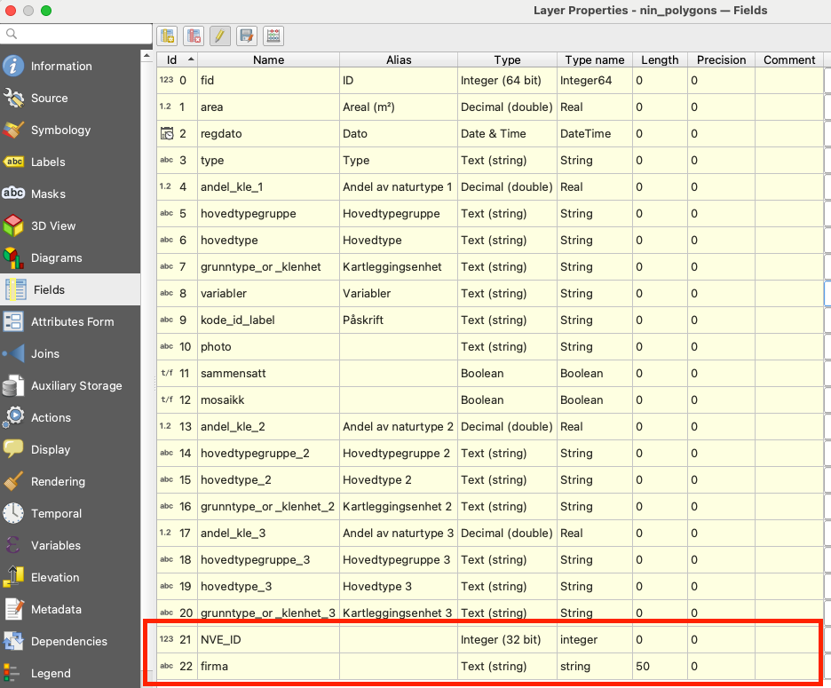
- De nye feltene
NVE_IDogfirmavises nå nederst i feltlisten. - Klikk Apply eller OK for å lagre endringene i lagets struktur.
7.8 Åpne fanen Attributes Form
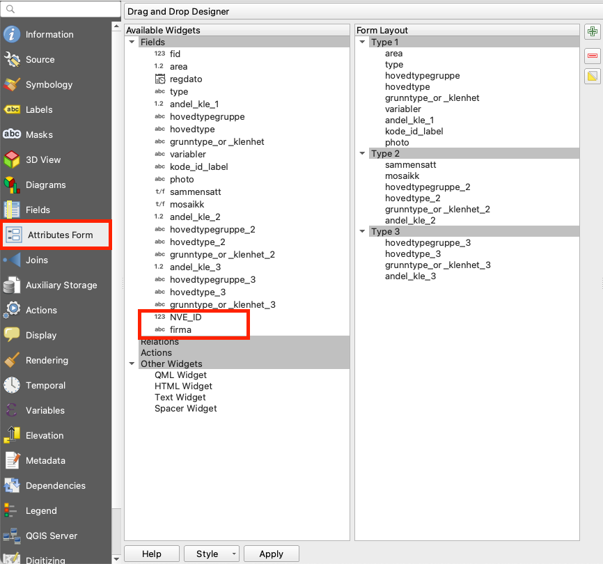
- Gå til fanen Attributes Form i venstremenyen.
- Her konfigureres hvordan redigeringsskjemaet for laget skal se ut.
7.9 Flytt feltet NVE_ID inn i skjemaet
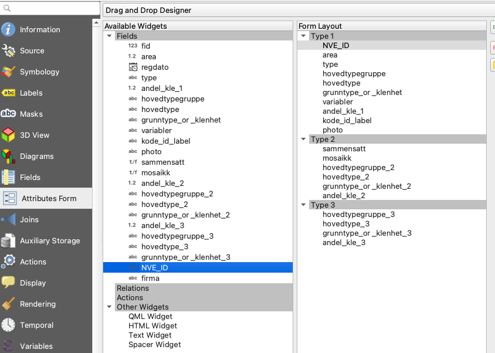
- Finn feltet
NVE_IDi listen Available Widgets. - Dra feltet over til ønsket plassering i Form Layout (for eksempel øverst under Type 1).
7.10 Flytt feltet firma inn i skjemaet
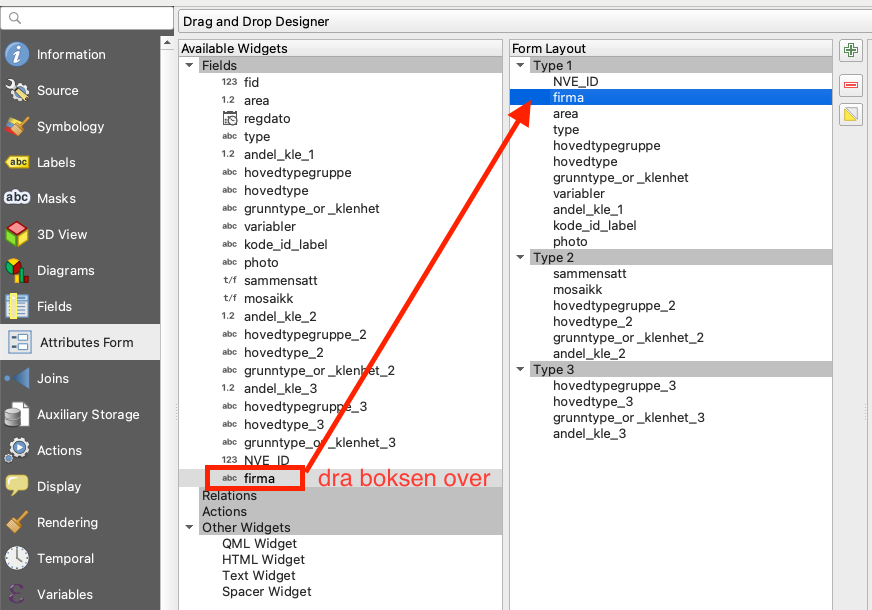
- Finn feltet
firmai Available Widgets. - Dra feltet til ønsket plassering i skjemaet, rett under
NVE_ID.
7.11 Lagre oppsettet
- Klikk Apply eller OK for å lagre skjemaoppsettet.
- Når du nå åpner attributtskjemaet for laget, vil feltene
NVE_IDogfirmavises i skjemaet.
7.12 Sett felttype til Value Map
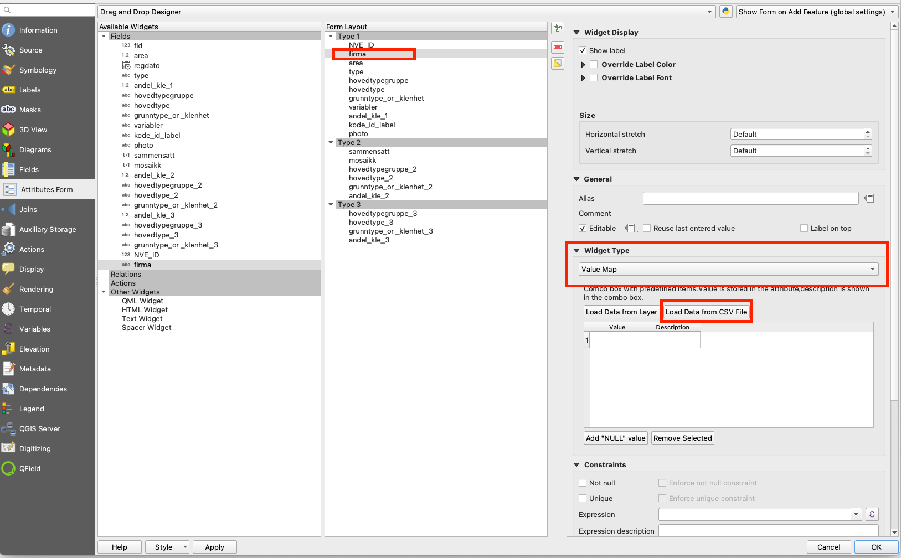
- Marker feltet
firmai Form Layout. - I høyre panel, under Widget Type, velg Value Map.
- Dette gjør at feltet vises som en nedtrekksliste med forhåndsdefinerte verdier.
7.13 Legg inn verdier i Value Map
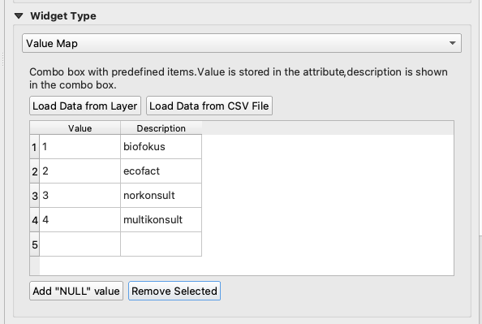
- I tabellen under Value og Description, legg inn ønskede koder og visningsnavn:
- 1 – biofokus
- 2 – ecofact
- 3 – norkonsult
- 4 – multikonsult
- Alternativt kan du bruke Load Data from CSV File hvis listen finnes i en fil.
Verdien i kolonnen Value lagres i databasen, mens Description vises i skjemaet.
7.14 Kontroller skjemaet i redigeringsmodus
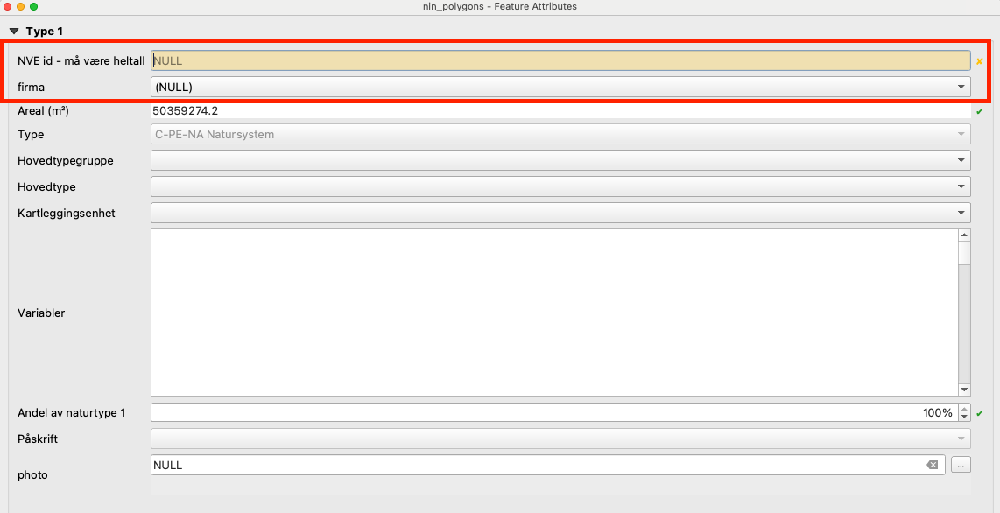
- Åpne attributtskjemaet for en flate i laget.
- Øverst i skjemaet vises nå feltene:
- NVE id – må være heltall
- firma (som nedtrekksliste)
Dette bekrefter at både nye felt og skjemaoppsett fungerer korrekt.
7.15 Velg verdi fra nedtrekkslisten
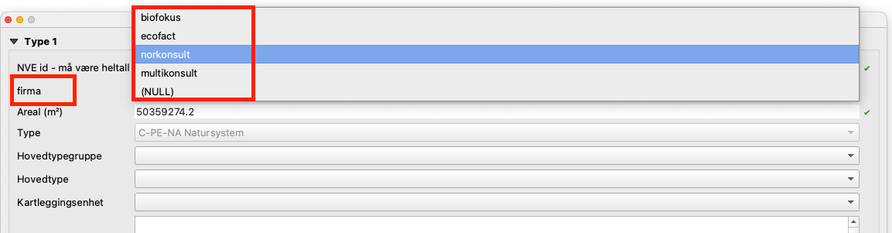
- Klikk på nedtrekkslisten for feltet
firma. - Velg ønsket firma fra listen (for eksempel norkonsult).
- Verdien lagres automatisk når objektet lagres.
7.16 Resultat
Du har nå:
- Opprettet nye felt i attributtabellen.
- Definert riktig datatype og lengde.
- Lagt feltene inn i redigeringsskjemaet slik at de kan fylles ut ved digitalisering eller redigering.
- Konfigurert feltet
firmasom en nedtrekksliste med forhåndsdefinerte verdier.
Husk at feltene bare finnes i dette prosjektets .gpkg-fil. Dersom du oppretter et nytt prosjekt med programtillegget, må feltene legges til på nytt.